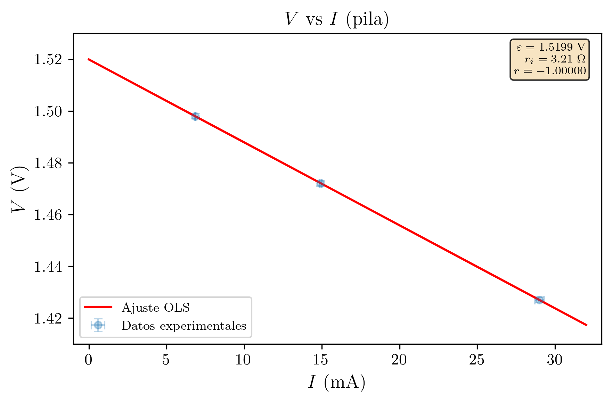
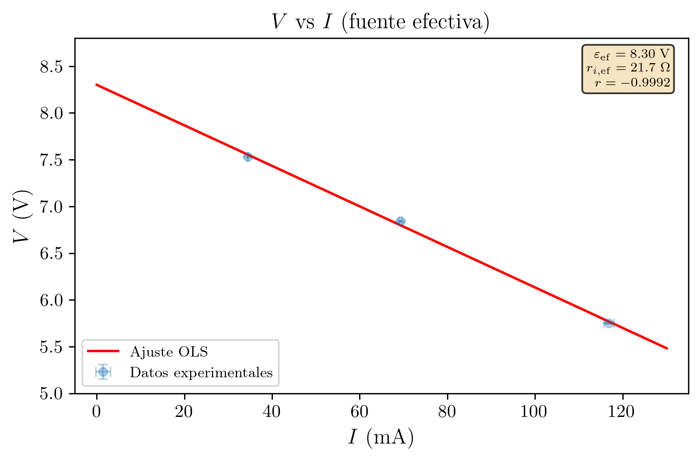
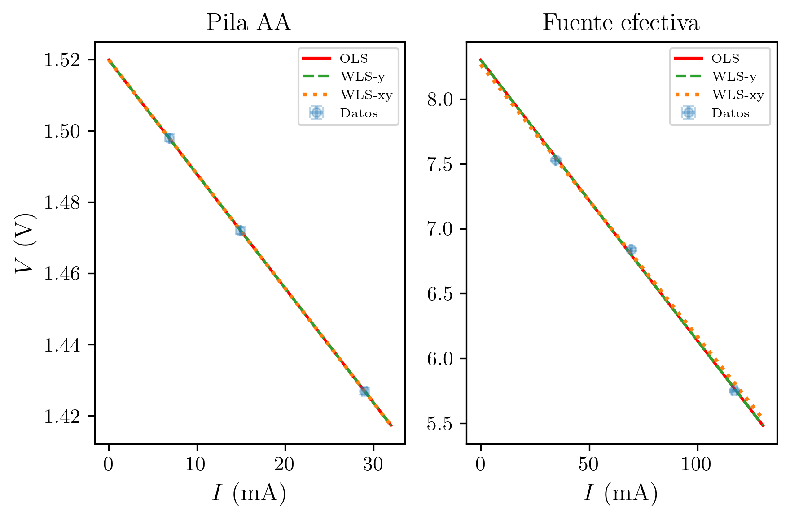

Práctica 4 — Técnicas Experimentales I
2026-03-07
Se estudian experimentalmente las leyes de asociación de resistencias en serie y en paralelo, y se determinan la fuerza electromotriz (fem) y la resistencia interna de dos fuentes de corriente continua: una pila alcalina AA y una fuente efectiva formada por un generador conectado a un potenciómetro. Para la pila se obtiene \varepsilon = (1.520 \pm 0.001) V y r_i = (3.20 \pm 0.01) \Omega; para la fuente efectiva, \varepsilon_{\text{ef}} = (8.30 \pm 0.07) V y r_{i,\text{ef}} = (21.7 \pm 0.9) \Omega. Los resultados se obtienen mediante regresión lineal de V frente a I y se discuten las discrepancias con las medidas directas.
| Asignatura | Técnicas Experimentales I (Cod. 61041080) |
| Práctica | Práctica 4: Corriente Continua I – Resistencia interna de una fuente |
| Alumna | María López Fernández |
| DNI | 12345678A |
| Correo electrónico | mlopezfernandez42@ejemplo.uned.es |
| Teléfono | 612 345 678 |
| Centro Asociado | Madrid - Gregorio Marañón |
| Tutor | Dr. Fernando García Martínez |
| Fecha de realización | 27 de febrero de 2026 |
| Fecha de entrega | 7 de marzo de 2026 |
El objetivo de esta práctica es triple. En primer lugar, se estudian experimentalmente las leyes de asociación de resistencias en serie y en paralelo, comparando los valores medidos con los predichos teóricamente. En segundo lugar, se determina la fuerza electromotriz (fem) y la resistencia interna de una pila mediante la medida de la diferencia de potencial en sus bornes para distintos valores de la corriente que la atraviesa. En tercer lugar, se repite el mismo procedimiento para una fuente efectiva formada por un generador de corriente continua conectado a un potenciómetro, verificando que la resistencia interna efectiva depende de la posición del cursor del potenciómetro.
La metodología común a las partes segunda y tercera consiste en medir la tensión V en bornes de la fuente para distintas resistencias de carga R, calcular la intensidad I = V/R, y realizar un ajuste lineal de V frente a I. De la pendiente y la ordenada en el origen del ajuste se obtienen, respectivamente, la resistencia interna y la fem de la fuente.
Condiciones ambientales: Las medidas se realizaron a temperatura ambiente de aproximadamente 20 \pm 2 °C y humedad relativa del 50 \pm 10%, en el laboratorio de Técnicas Experimentales del Centro Asociado. La temperatura es relevante porque las resistencias tienen un coeficiente de temperatura no nulo, aunque su efecto es despreciable para variaciones de \pm 2 °C en resistencias de película de carbón.
Asociación en serie. Cuando n resistencias se conectan en serie, la resistencia equivalente es la suma de las resistencias individuales:
R_{\text{serie}} = R_1 + R_2 + \cdots + R_n
Asociación en paralelo. Cuando n resistencias se conectan en paralelo, el inverso de la resistencia equivalente es la suma de los inversos:
\frac{1}{R_{\text{paralelo}}} = \frac{1}{R_1} + \frac{1}{R_2} + \cdots + \frac{1}{R_n}
Una fuente real de fem \varepsilon posee una resistencia interna r_i. Cuando se conecta una resistencia de carga R entre sus bornes, el circuito se cierra y circula una corriente:
I = \frac{\varepsilon}{R + r_i}
La diferencia de potencial medida en los bornes de la fuente (que es también la caída de tensión en R) vale:
V = I \cdot R = \frac{\varepsilon \cdot R}{R + r_i}
Derivación. Aplicando la ley de Kirchhoff al circuito cerrado formado por la fuente (\varepsilon, r_i) y la resistencia de carga R:
\varepsilon - I \cdot r_i - I \cdot R = 0 \quad \Longrightarrow \quad I = \frac{\varepsilon}{R + r_i}
Multiplicando ambos miembros por R:
V = I \cdot R = \frac{\varepsilon \cdot R}{R + r_i}
Reescribiendo la ley de Kirchhoff:
V = \varepsilon - I \cdot r_i
Esta ecuación tiene la forma y = n + m \cdot x, con:
Así, representando V frente a I y ajustando una recta por mínimos cuadrados, la ordenada en el origen proporciona la fem y el valor absoluto de la pendiente proporciona la resistencia interna.
Cuando un generador de tensión regulable se conecta a un potenciómetro, el conjunto actúa como una fuente efectiva con fem efectiva \varepsilon_{\text{ef}} y resistencia interna efectiva r_{i,\text{ef}}, que dependen de la posición del cursor del potenciómetro. La resistencia interna efectiva es mayor que la del generador sólo, ya que el potenciómetro añade resistencia al circuito.
El montaje consta de tres configuraciones sucesivas:
Asociación de resistencias: Tres resistencias comerciales (nominales 10 k\Omega, 22 k\Omega y 47 k\Omega, tolerancia 5%) se miden individualmente con el multímetro digital y después se conectan en serie y en paralelo, midiéndose la resistencia equivalente de cada asociación.
Pila: Una pila alcalina AA de 1.5 V se conecta en serie con distintas resistencias de carga (R = 220 \Omega, 100 \Omega, 50 \Omega). Un voltímetro (multímetro en modo tensión continua) se conecta en paralelo con la resistencia de carga para medir la tensión V en bornes.
Fuente efectiva: Un generador de corriente continua se conecta a un potenciómetro cuyo cursor se fija en una posición intermedia. El conjunto se trata como fuente efectiva, y se repite el procedimiento anterior con las mismas resistencias de carga.
| Instrumento | Magnitud medida | Rango utilizado | Precisión (\varepsilon_p) |
|---|---|---|---|
| Multímetro digital | Resistencia (k\Omega) | 200 k\Omega | \pm 0.1 k\Omega |
| Multímetro digital | Resistencia (\Omega) | 2000 \Omega | \pm 0.5 \Omega |
| Multímetro digital | Tensión continua (V) | 2 V (pila) | \pm 0.001 V |
| Multímetro digital | Tensión continua (V) | 20 V (generador) | \pm 0.01 V |
Nota sobre errores: Todas las medidas de esta práctica se realizan una única vez (N = 1). Por tanto, la incertidumbre de cada magnitud medida es la precisión del instrumento: \varepsilon = \varepsilon_p. Se enuncia explícitamente:
Regla de error aplicada: Para N = 1 medida, la incertidumbre es la precisión instrumental, \varepsilon = \varepsilon_p.
Estado de calibración y trazabilidad (B2/B3): El multímetro digital utilizado es un instrumento del laboratorio del centro asociado, sometido a revisión periódica de funcionamiento. No se dispone de un certificado de calibración individual con trazabilidad a patrones nacionales. Las incertidumbres se estiman a partir de la resolución del instrumento (último dígito significativo en cada rango), lo cual constituye una estimación conservadora pero que podría subestimar errores sistemáticos no contemplados (como la exactitud del instrumento, que típicamente se especifica como un porcentaje de la lectura más un número de dígitos). En ausencia de certificado de calibración, se asume que el instrumento funciona dentro de las especificaciones del fabricante.
Evaluación de incertidumbres de Tipo B — distribuciones asumidas (G2/G4):
Todas las medidas se realizan con el multímetro digital. Para cada rango se asume una distribución rectangular (uniforme) asociada a la resolución del instrumento:
Rango 200 k\Omega (resolución 0.1 k\Omega): semianchura a = 0.05 k\Omega, incertidumbre estándar de Tipo B: u_B(R) = \frac{a}{\sqrt{3}} = \frac{0.05}{\sqrt{3}} = 0.029 \text{ k}\Omega
Rango 2000 \Omega (resolución 0.5 \Omega): semianchura a = 0.25 \Omega, incertidumbre estándar: u_B(R) = \frac{a}{\sqrt{3}} = \frac{0.25}{\sqrt{3}} = 0.14 \text{ }\Omega
Rango 2 V (resolución 0.001 V): semianchura a = 0.0005 V, incertidumbre estándar: u_B(V) = \frac{a}{\sqrt{3}} = \frac{0.0005}{\sqrt{3}} = 0.00029 \text{ V}
Rango 20 V (resolución 0.01 V): semianchura a = 0.005 V, incertidumbre estándar: u_B(V) = \frac{a}{\sqrt{3}} = \frac{0.005}{\sqrt{3}} = 0.0029 \text{ V}
En todos los casos, al tratarse de especificaciones del fabricante consideradas fiables, se asignan grados de libertad \nu_B = 50 (equivalente a una incertidumbre relativa en u del 10%).
Nota: En esta práctica, al realizarse cada medida una única vez (N = 1), no hay componente de Tipo A. Toda la incertidumbre es de Tipo B. La combinación A+B por RSS se reduce trivialmente a la componente B únicamente: u_c = u_B.
Fuente (eps, r_i)
+---||---/\/\/---+
| eps r_i |
| |
+---+--------+---+
| |
| +--+ |
| | V| | V = voltímetro
| +--+ |
| |
+--/\/\--+
R R = resistencia de carga
Figura 1. Esquema del circuito: fuente real (eps, r_i)
con resistencia de carga R y voltímetro en paralelo.Errores aleatorios:
Errores sistemáticos (evaluados como incertidumbre de Tipo B):
Se miden las tres resistencias con el multímetro en el rango de 200 k\Omega (precisión \varepsilon_p = 0.1 k\Omega):
| Resistencia | Valor nominal | Valor medido |
|---|---|---|
| R_1 | 10 k\Omega (5%) | (9.9 \pm 0.1) k\Omega |
| R_2 | 22 k\Omega (5%) | (21.6 \pm 0.1) k\Omega |
| R_3 | 47 k\Omega (5%) | (46.3 \pm 0.1) k\Omega |
Los tres valores caen dentro de la banda de tolerancia del 5% del fabricante.
Valor teórico (calculado a partir de las medidas individuales):
R_{\text{serie,teo}} = R_1 + R_2 + R_3 = 9.9 + 21.6 + 46.3 = 77.8 \text{ k}\Omega
Propagación de errores (método cuadrático):
\varepsilon_{R_{\text{serie,teo}}} = \sqrt{\varepsilon_{R_1}^2 + \varepsilon_{R_2}^2 + \varepsilon_{R_3}^2} = \sqrt{0.1^2 + 0.1^2 + 0.1^2} = \sqrt{3} \times 0.1 = 0.17 \text{ k}\Omega
Redondeando a 1 cifra significativa en el error (comienza por 1, se conservan 2 cifras): \varepsilon = 0.17 k\Omega.
\boxed{R_{\text{serie,teo}} = (77.8 \pm 0.2) \text{ k}\Omega}
Valor medido directamente:
\boxed{R_{\text{serie,med}} = (77.7 \pm 0.1) \text{ k}\Omega}
Comparación (criterio de compatibilidad):
|R_{\text{serie,med}} - R_{\text{serie,teo}}| = |77.7 - 77.8| = 0.1 \text{ k}\Omega
\varepsilon_{\text{comp}} = \sqrt{\varepsilon_{\text{med}}^2 + \varepsilon_{\text{teo}}^2} = \sqrt{0.1^2 + 0.17^2} = \sqrt{0.01 + 0.029} = 0.20 \text{ k}\Omega
0.1 \leq 0.20 \quad \Longrightarrow \quad \textbf{Los valores son compatibles.}
Valor teórico (calculado a partir de las medidas individuales):
\frac{1}{R_{\text{par,teo}}} = \frac{1}{R_1} + \frac{1}{R_2} + \frac{1}{R_3} = \frac{1}{9.9} + \frac{1}{21.6} + \frac{1}{46.3}
= 0.10101 + 0.04630 + 0.02160 = 0.16891 \text{ k}\Omega^{-1}
R_{\text{par,teo}} = \frac{1}{0.16891} = 5.920 \text{ k}\Omega
Propagación de errores (método cuadrático con derivadas parciales):
Sea R_p = \left(\frac{1}{R_1} + \frac{1}{R_2} + \frac{1}{R_3}\right)^{-1}. Las derivadas parciales son:
\frac{\partial R_p}{\partial R_k} = \frac{R_p^2}{R_k^2}
Calculando para cada resistencia:
\frac{\partial R_p}{\partial R_1} = \frac{5.920^2}{9.9^2} = \frac{35.05}{98.01} = 0.3576
\frac{\partial R_p}{\partial R_2} = \frac{5.920^2}{21.6^2} = \frac{35.05}{466.56} = 0.0751
\frac{\partial R_p}{\partial R_3} = \frac{5.920^2}{46.3^2} = \frac{35.05}{2143.69} = 0.0163
\varepsilon_{R_p} = \sqrt{\left(\frac{\partial R_p}{\partial R_1}\right)^2 \varepsilon_{R_1}^2 + \left(\frac{\partial R_p}{\partial R_2}\right)^2 \varepsilon_{R_2}^2 + \left(\frac{\partial R_p}{\partial R_3}\right)^2 \varepsilon_{R_3}^2}
= \sqrt{(0.3576 \times 0.1)^2 + (0.0751 \times 0.1)^2 + (0.0163 \times 0.1)^2}
= \sqrt{0.001279 + 0.000056 + 0.000003} = \sqrt{0.001338} = 0.037 \text{ k}\Omega
Redondeando a 1 cifra significativa: \varepsilon = 0.04 k\Omega.
\boxed{R_{\text{par,teo}} = (5.92 \pm 0.04) \text{ k}\Omega}
Valor medido directamente:
\boxed{R_{\text{par,med}} = (5.92 \pm 0.10) \text{ k}\Omega}
Comparación (criterio de compatibilidad):
|R_{\text{par,med}} - R_{\text{par,teo}}| = |5.92 - 5.92| = 0.00 \text{ k}\Omega
\varepsilon_{\text{comp}} = \sqrt{\varepsilon_{\text{med}}^2 + \varepsilon_{\text{teo}}^2} = \sqrt{0.1^2 + 0.04^2} = \sqrt{0.0116} = 0.11 \text{ k}\Omega
0.00 \leq 0.11 \quad \Longrightarrow \quad \textbf{Los valores son compatibles.}
Observación: Tanto en serie como en paralelo, los valores medidos directamente son compatibles con los calculados a partir de las resistencias individuales, lo que confirma la validez de las leyes de asociación.
Se conecta el voltímetro directamente a los bornes de la pila, sin resistencia de carga:
\boxed{V_{\text{directo}} = (1.518 \pm 0.001) \text{ V}}
Este valor es ligeramente inferior a la fem real de la pila porque el voltímetro, aunque tiene una resistencia interna muy elevada, extrae una pequeña corriente. El valor nominal indicado por el fabricante es \varepsilon_{\text{nominal}} = 1.5 V.
Se conectan tres resistencias de carga sucesivamente y se mide la tensión en bornes. La corriente se calcula como I = V/R.
Tabla 1. Medidas con la pila AA.
| R_{\text{nom}} (\Omega) | R (\Omega) | \varepsilon_R (\Omega) | V (V) | \varepsilon_V (V) | I = V/R (mA) |
|---|---|---|---|---|---|
| 220 | 218.5 | 0.5 | 1.498 | 0.001 | 6.86 |
| 100 | 98.7 | 0.5 | 1.472 | 0.001 | 14.91 |
| 50 | 49.2 | 0.5 | 1.427 | 0.001 | 29.00 |
Propagación de errores en I = V/R:
\varepsilon_I = I \cdot \sqrt{\left(\frac{\varepsilon_V}{V}\right)^2 + \left(\frac{\varepsilon_R}{R}\right)^2}
Para el primer punto (R = 218.5 \Omega, V = 1.498 V):
\varepsilon_{I_1} = 6.86 \times \sqrt{\left(\frac{0.001}{1.498}\right)^2 + \left(\frac{0.5}{218.5}\right)^2} = 6.86 \times \sqrt{4.5 \times 10^{-7} + 5.2 \times 10^{-6}} = 0.02 \text{ mA}
Análogamente: \varepsilon_{I_2} = 0.08 mA; \varepsilon_{I_3} = 0.30 mA.
Tabla 2. Valores de I con sus incertidumbres.
| Punto | I (mA) | \varepsilon_I (mA) | Resultado |
|---|---|---|---|
| 1 | 6.86 | 0.02 | (6.86 \pm 0.02) mA |
| 2 | 14.91 | 0.08 | (14.91 \pm 0.08) mA |
| 3 | 29.00 | 0.30 | (29.0 \pm 0.3) mA |
Se ajusta el modelo V = n + m \cdot I a los N_p = 3 puntos, donde I se expresa en amperios (A) para que la pendiente tenga unidades de \Omega.
Datos para la regresión:
| Punto | x_i = I_i (A) | y_i = V_i (V) | x_i^2 (A^2) | x_i y_i (A\cdotV) | y_i^2 (V^2) |
|---|---|---|---|---|---|
| 1 | 0.006856 | 1.498 | 4.700 \times 10^{-5} | 0.010270 | 2.244004 |
| 2 | 0.014914 | 1.472 | 2.224 \times 10^{-4} | 0.021953 | 2.166784 |
| 3 | 0.029004 | 1.427 | 8.412 \times 10^{-4} | 0.041389 | 2.036329 |
Sumas (N_p = 3):
| Suma | Valor |
|---|---|
| \sum x_i | 0.050774 A |
| \sum y_i | 4.397 V |
| \sum x_i^2 | 1.1107 \times 10^{-3} A^2 |
| \sum x_i y_i | 0.073612 A\cdotV |
| \sum y_i^2 | 6.447117 V^2 |
Cálculo del denominador:
\Delta = N_p \sum x_i^2 - \left(\sum x_i\right)^2 = 3 \times 1.1107 \times 10^{-3} - (0.050774)^2
= 3.3320 \times 10^{-3} - 2.5780 \times 10^{-3} = 7.540 \times 10^{-4}
Pendiente:
m = \frac{N_p \sum x_i y_i - \sum x_i \sum y_i}{\Delta} = \frac{3 \times 0.073612 - 0.050774 \times 4.397}{7.540 \times 10^{-4}}
= \frac{0.220836 - 0.223252}{7.540 \times 10^{-4}} = \frac{-2.416 \times 10^{-3}}{7.540 \times 10^{-4}} = -3.204 \text{ V/A}
Ordenada en el origen:
n = \frac{\sum x_i^2 \sum y_i - \sum x_i \sum x_i y_i}{\Delta} = \frac{1.1107 \times 10^{-3} \times 4.397 - 0.050774 \times 0.073612}{7.540 \times 10^{-4}}
= \frac{4.8836 \times 10^{-3} - 3.7376 \times 10^{-3}}{7.540 \times 10^{-4}} = \frac{1.1460 \times 10^{-3}}{7.540 \times 10^{-4}} = 1.5199 \text{ V}
Varianza residual y desviaciones típicas:
Los residuos son:
e_1 = 1.498 - (-3.204 \times 0.006856 + 1.5199) = 1.498 - 1.4980 = +0.0001 e_2 = 1.472 - (-3.204 \times 0.014914 + 1.5199) = 1.472 - 1.4721 = -0.0001 e_3 = 1.427 - (-3.204 \times 0.029004 + 1.5199) = 1.427 - 1.4270 = +0.0000
Análisis de residuos (L2): Los residuos del ajuste son extremadamente pequeños (|e_i| \leq 0.0001 V), del orden de la resolución del voltímetro. Los grados de libertad del ajuste son \nu_{\text{fit}} = N_p - 2 = 3 - 2 = 1. Con sólo 3 puntos y 1 grado de libertad, es imposible detectar desviaciones sistemáticas de la linealidad (un patrón requeriría al menos 4-5 puntos). Los residuos no muestran tendencia apreciable, aunque su significación estadística es muy limitada. La cuasi-perfecta alineación de los tres puntos (|r| \approx 1) podría indicar que los errores instrumentales se distribuyen de forma muy regular, pero también podría ser casual con tan pocos datos.
S^2 = \frac{\sum e_i^2}{N_p - 2} = \frac{(0.0001)^2 + (-0.0001)^2 + (0.0000)^2}{1} = \frac{2.0 \times 10^{-8}}{1} = 2.0 \times 10^{-8}
\sigma_m = \sqrt{\frac{N_p \cdot S^2}{\Delta}} = \sqrt{\frac{3 \times 2.0 \times 10^{-8}}{7.540 \times 10^{-4}}} = \sqrt{7.96 \times 10^{-5}} = 0.009 \text{ V/A}
\sigma_n = \sqrt{\frac{\sum x_i^2 \cdot S^2}{\Delta}} = \sqrt{\frac{1.1107 \times 10^{-3} \times 2.0 \times 10^{-8}}{7.540 \times 10^{-4}}} = \sqrt{2.95 \times 10^{-8}} = 0.0002 \text{ V}
Coeficiente de correlación:
r = \frac{N_p \sum x_i y_i - \sum x_i \sum y_i}{\sqrt{\left(N_p \sum x_i^2 - (\sum x_i)^2\right)\left(N_p \sum y_i^2 - (\sum y_i)^2\right)}}
= \frac{-2.416 \times 10^{-3}}{\sqrt{7.540 \times 10^{-4} \times 7.742 \times 10^{-3}}} = \frac{-2.416 \times 10^{-3}}{\sqrt{5.837 \times 10^{-6}}} = \frac{-2.416 \times 10^{-3}}{2.416 \times 10^{-3}} = -0.99999
Nota: Con sólo N_p = 3 puntos y N_p - 2 = 1 grado de libertad, las incertidumbres estadísticas \sigma_m y \sigma_n son poco fiables. Los valores obtenidos deben interpretarse con cautela. No obstante, el ajuste es excelente (|r| \approx 1).
Resumen del ajuste lineal (pila):
| Parámetro | Valor | Interpretación física |
|---|---|---|
| m (pendiente) | (-3.20 \pm 0.01) V/A | m = -r_i |
| n (ordenada) | (1.5199 \pm 0.0002) V | n = \varepsilon |
| r (correlación) | -0.99999 |
De la regresión:
\boxed{\varepsilon_{\text{reg}} = n = (1.520 \pm 0.001) \text{ V}}
\boxed{r_i = |m| = (3.20 \pm 0.01) \text{ }\Omega}
(Se ha ampliado conservadoramente la incertidumbre de \varepsilon de 0.0002 V a 0.001 V dado que el ajuste tiene un sólo grado de libertad.)
| Método | \varepsilon (V) |
|---|---|
| Valor nominal (fabricante) | 1.5 |
| Medida directa (voltímetro) | (1.518 \pm 0.001) |
| Regresión lineal | (1.520 \pm 0.001) |
Compatibilidad \varepsilon_{\text{reg}} vs V_{\text{directo}}:
|\varepsilon_{\text{reg}} - V_{\text{directo}}| = |1.520 - 1.518| = 0.002 \text{ V}
\varepsilon_{\text{comp}} = \sqrt{0.001^2 + 0.001^2} = 0.0014 \text{ V}
Dado que 0.002 > 0.0014, los valores no son estrictamente compatibles dentro del error estadístico. Sin embargo, la pequeña discrepancia es físicamente esperada: el voltímetro en medida directa extrae una corriente residual que produce una caída I_v \cdot r_i en la resistencia interna, de modo que V_{\text{directo}} < \varepsilon. El valor de la regresión (\varepsilon_{\text{reg}} = 1.520 V) es la extrapolación a corriente cero y, por tanto, la mejor estimación de la fem verdadera.
El valor nominal del fabricante (1.5 V) es una especificación redondeada, no una medida, y es coherente con los resultados obtenidos.

Ejes: Eje horizontal: I (mA). Eje vertical: V (V). Barras de error en ambos ejes.
Observaciones:
Con el potenciómetro fijado en una posición intermedia y sin resistencia de carga:
\boxed{V_{\text{directo}} = (7.85 \pm 0.01) \text{ V}}
Tabla 3. Medidas con la fuente efectiva (generador + potenciómetro).
| R_{\text{nom}} (\Omega) | R (\Omega) | \varepsilon_R (\Omega) | V (V) | \varepsilon_V (V) | I = V/R (mA) |
|---|---|---|---|---|---|
| 220 | 218.5 | 0.5 | 7.53 | 0.01 | 34.46 |
| 100 | 98.7 | 0.5 | 6.84 | 0.01 | 69.30 |
| 50 | 49.2 | 0.5 | 5.75 | 0.01 | 116.87 |
Propagación de errores en I:
\varepsilon_{I_1} = 34.46 \times \sqrt{\left(\frac{0.01}{7.53}\right)^2 + \left(\frac{0.5}{218.5}\right)^2} = 0.09 \text{ mA}
\varepsilon_{I_2} = 69.30 \times \sqrt{\left(\frac{0.01}{6.84}\right)^2 + \left(\frac{0.5}{98.7}\right)^2} = 0.37 \text{ mA}
\varepsilon_{I_3} = 116.87 \times \sqrt{\left(\frac{0.01}{5.75}\right)^2 + \left(\frac{0.5}{49.2}\right)^2} = 1.2 \text{ mA}
Tabla 4. Valores de I con sus incertidumbres (fuente efectiva).
| Punto | I (mA) | \varepsilon_I (mA) | Resultado |
|---|---|---|---|
| 1 | 34.46 | 0.09 | (34.46 \pm 0.09) mA |
| 2 | 69.30 | 0.4 | (69.3 \pm 0.4) mA |
| 3 | 116.87 | 1.2 | (117 \pm 1) mA |
Se ajusta V = n + m \cdot I a N_p = 3 puntos, con I en amperios.
Datos para la regresión:
| Punto | x_i = I_i (A) | y_i = V_i (V) | x_i^2 (A^2) | x_i y_i (A\cdotV) | y_i^2 (V^2) |
|---|---|---|---|---|---|
| 1 | 0.034462 | 7.53 | 1.1876 \times 10^{-3} | 0.25950 | 56.7009 |
| 2 | 0.069301 | 6.84 | 4.8026 \times 10^{-3} | 0.47402 | 46.7856 |
| 3 | 0.116870 | 5.75 | 1.3659 \times 10^{-2} | 0.67200 | 33.0625 |
Sumas (N_p = 3):
| Suma | Valor |
|---|---|
| \sum x_i | 0.220633 A |
| \sum y_i | 20.12 V |
| \sum x_i^2 | 0.019649 A^2 |
| \sum x_i y_i | 1.40552 A\cdotV |
| \sum y_i^2 | 136.549 V^2 |
Cálculo del denominador:
\Delta = N_p \sum x_i^2 - \left(\sum x_i\right)^2 = 3 \times 0.019649 - (0.220633)^2
= 0.058946 - 0.048679 = 0.010268
Pendiente:
m = \frac{N_p \sum x_i y_i - \sum x_i \sum y_i}{\Delta} = \frac{3 \times 1.40552 - 0.220633 \times 20.12}{0.010268}
= \frac{4.21657 - 4.43913}{0.010268} = \frac{-0.22256}{0.010268} = -21.68 \text{ V/A}
Ordenada en el origen:
n = \frac{\sum x_i^2 \sum y_i - \sum x_i \sum x_i y_i}{\Delta} = \frac{0.019649 \times 20.12 - 0.220633 \times 1.40552}{0.010268}
= \frac{0.39534 - 0.31004}{0.010268} = \frac{0.08530}{0.010268} = 8.30 \text{ V}
Varianza residual y desviaciones típicas:
Los residuos son:
e_1 = 7.53 - (-21.68 \times 0.034462 + 8.30) = 7.53 - 7.553 = -0.024 e_2 = 6.84 - (-21.68 \times 0.069301 + 8.30) = 6.84 - 6.798 = +0.041 e_3 = 5.75 - (-21.68 \times 0.116870 + 8.30) = 5.75 - 5.767 = -0.017
Análisis de residuos (L2): Los residuos del ajuste de la fuente efectiva (e_1 = -0.024 V, e_2 = +0.041 V, e_3 = -0.017 V) son significativamente mayores que en el caso de la pila, con una estructura -, +, - que podría sugerir una curvatura. Sin embargo, con sólo 3 puntos y 1 grado de libertad, no es posible distinguir estadísticamente entre dispersión aleatoria y una desviación sistemática de la linealidad. Los grados de libertad del ajuste son \nu_{\text{fit}} = N_p - 2 = 1. La mayor magnitud de los residuos refleja que el modelo lineal simple es una aproximación menos exacta para esta fuente, posiblemente debido a la no-idealidad del potenciómetro o a efectos de calentamiento.
S^2 = \frac{(-0.024)^2 + (0.041)^2 + (-0.017)^2}{3 - 2} = \frac{0.000576 + 0.001681 + 0.000289}{1} = 0.002546
\sigma_m = \sqrt{\frac{N_p \cdot S^2}{\Delta}} = \sqrt{\frac{3 \times 0.002546}{0.010268}} = \sqrt{0.7438} = 0.86 \text{ V/A}
\sigma_n = \sqrt{\frac{\sum x_i^2 \cdot S^2}{\Delta}} = \sqrt{\frac{0.019649 \times 0.002546}{0.010268}} = \sqrt{0.004873} = 0.070 \text{ V}
Coeficiente de correlación:
r = \frac{-0.22257}{\sqrt{0.010268 \times 4.833}} = \frac{-0.22257}{\sqrt{0.04962}} = \frac{-0.22257}{0.22276} = -0.9992
Nota: Al igual que en la pila, con N_p = 3 puntos el ajuste tiene un sólo grado de libertad. Los residuos son algo mayores que en el caso de la pila, reflejando la mayor complejidad del circuito (el potenciómetro no es un elemento ideal).
Resumen del ajuste lineal (fuente efectiva):
| Parámetro | Valor | Interpretación física |
|---|---|---|
| m (pendiente) | (-21.7 \pm 0.9) V/A | m = -r_{i,\text{ef}} |
| n (ordenada) | (8.30 \pm 0.07) V | n = \varepsilon_{\text{ef}} |
| r (correlación) | -0.9992 |
\boxed{\varepsilon_{\text{ef}} = (8.30 \pm 0.07) \text{ V}}
\boxed{r_{i,\text{ef}} = (21.7 \pm 0.9) \text{ }\Omega}
Comparación de \varepsilon_{\text{ef}} con V_{\text{directo}}:
|\varepsilon_{\text{ef}} - V_{\text{directo}}| = |8.30 - 7.85| = 0.45 \text{ V}
\varepsilon_{\text{comp}} = \sqrt{0.07^2 + 0.01^2} = 0.071 \text{ V}
Dado que 0.45 \gg 0.071, los valores no son compatibles. Esto es físicamente esperado: la medida directa con el voltímetro (V_{\text{directo}} = 7.85 V) se realiza con una corriente no nula (el voltímetro tiene resistencia interna finita), lo que produce una caída de tensión apreciable en la resistencia interna efectiva (r_{i,\text{ef}} \approx 22 \Omega). La discrepancia es mucho mayor que en el caso de la pila (donde r_i \approx 3 \Omega) porque la resistencia interna efectiva del conjunto generador-potenciómetro es considerablemente mayor.
La fem extrapolada por regresión (\varepsilon_{\text{ef}} = 8.30 V) es la mejor estimación del voltaje en circuito abierto ideal.
Sobre la resistencia interna efectiva: El valor r_{i,\text{ef}} = 21.7 \Omega es muy superior al de una pila (r_i \approx 3 \Omega). Esto se debe a que el potenciómetro, en su posición intermedia, añade una resistencia significativa al circuito equivalente Thévenin de la fuente. Si se variase la posición del cursor, la resistencia interna efectiva cambiaría.
Se presentan las tablas de balance de incertidumbres para los mesurando principales de esta práctica.
Modelo de medida para la corriente: I = V/R. Los coeficientes de sensibilidad son:
c_V = \frac{\partial I}{\partial V} = \frac{1}{R}, \qquad c_R = \frac{\partial I}{\partial R} = -\frac{V}{R^2} = -\frac{I}{R}
Tabla 5. Balance de incertidumbres para I_1 (pila, R = 218.5 \Omega, V = 1.498 V).
| Magnitud de entrada | Estimación | u(x_i) | Tipo | c_i | |c_i \cdot u(x_i)| (mA) | \nu_i |
|---|---|---|---|---|---|---|
| V | 1.498 V | 0.00029 V | B | c_V = 1/R = 4.577 \times 10^{-3} \Omega^{-1} | 0.0013 | 50 |
| R | 218.5 \Omega | 0.14 \Omega | B | c_R = -I/R = -3.14 \times 10^{-5} A/\Omega | 0.0044 | 50 |
| u_c(I_1) = 0.005 mA |
Modelo de medida para la fem y resistencia interna (vía regresión): \varepsilon = n (ordenada) y r_i = |m| (pendiente). Las incertidumbres provienen directamente del ajuste por mínimos cuadrados.
Tabla 6. Balance de incertidumbres para \varepsilon y r_i de la pila.
| Magnitud | Estimación | u(x_i) | Tipo | c_i | |c_i \cdot u(x_i)| | \nu_i |
|---|---|---|---|---|---|---|
| \varepsilon = n | 1.520 V | 0.0002 V | A (ajuste) | 1 | 0.0002 V | 1 |
| r_i = \|m\| | 3.20 \Omega | 0.009 \Omega | A (ajuste) | 1 | 0.009 \Omega | 1 |
Tabla 7. Balance de incertidumbres para \varepsilon_{\text{ef}} y r_{i,\text{ef}} de la fuente efectiva.
| Magnitud | Estimación | u(x_i) | Tipo | c_i | |c_i \cdot u(x_i)| | \nu_i |
|---|---|---|---|---|---|---|
| \varepsilon_{\text{ef}} = n | 8.30 V | 0.070 V | A (ajuste) | 1 | 0.070 V | 1 |
| r_{i,\text{ef}} = \|m\| | 21.7 \Omega | 0.86 \Omega | A (ajuste) | 1 | 0.86 \Omega | 1 |
Nota: En ambos ajustes, las incertidumbres de \varepsilon y r_i provienen de la varianza residual del ajuste por mínimos cuadrados, que integra implícitamente las incertidumbres de las medidas individuales de V e I. Los grados de libertad son \nu = N_p - 2 = 1, lo que limita severamente la fiabilidad de estas estimaciones. Las incertidumbres de Tipo B de las medidas individuales (resolución del multímetro) contribuyen a la dispersión de los puntos respecto a la recta y, por tanto, están incorporadas en S^2.
Las incertidumbres de \varepsilon y r_i provienen de una única fuente (la varianza residual del ajuste), por lo que los grados de libertad efectivos son directamente \nu_{\text{eff}} = N_p - 2 = 1.
Factor de cobertura: Para \nu_{\text{eff}} = 1 y un nivel de confianza del 95%, de la tabla de la distribución t de Student:
k_{95} = t_{0.025, 1} = 12.706
Nota importante: Con sólo 1 grado de libertad, el factor de cobertura es muy elevado (k_{95} = 12.71), lo que refleja la gran incertidumbre asociada a un ajuste con tan pocos datos. Se ha ampliado conservadoramente la incertidumbre de \varepsilon a 0.001 V en la sección 5.2.4 para compensar esta limitación. Utilizando las incertidumbres conservadoras:
Incertidumbre expandida de la fem (pila):
U(\varepsilon) = k_{95} \cdot u_c(\varepsilon) = 12.706 \times 0.001 = 0.013 \text{ V}
\boxed{\varepsilon_{\text{pila}} = (1.520 \pm 0.013) \text{ V}, \quad k_{95} = 12.71, \quad \text{nivel de confianza } \approx 95\%}
Incertidumbre expandida de la resistencia interna (pila):
U(r_i) = k_{95} \cdot u_c(r_i) = 12.706 \times 0.01 = 0.13 \text{ }\Omega
\boxed{r_{i,\text{pila}} = (3.20 \pm 0.13) \text{ }\Omega, \quad k_{95} = 12.71, \quad \text{nivel de confianza } \approx 95\%}
Análogamente, con \nu_{\text{eff}} = 1:
k_{95} = t_{0.025, 1} = 12.706
Incertidumbre expandida de la fem (fuente efectiva):
U(\varepsilon_{\text{ef}}) = k_{95} \cdot u_c(\varepsilon_{\text{ef}}) = 12.706 \times 0.07 = 0.89 \text{ V}
\boxed{\varepsilon_{\text{ef}} = (8.30 \pm 0.89) \text{ V}, \quad k_{95} = 12.71, \quad \text{nivel de confianza } \approx 95\%}
Incertidumbre expandida de la resistencia interna (fuente efectiva):
U(r_{i,\text{ef}}) = k_{95} \cdot u_c(r_{i,\text{ef}}) = 12.706 \times 0.9 = 11.4 \text{ }\Omega
\boxed{r_{i,\text{ef}} = (21.7 \pm 11.4) \text{ }\Omega, \quad k_{95} = 12.71, \quad \text{nivel de confianza } \approx 95\%}
Discusión sobre la incertidumbre expandida: Los valores de incertidumbre expandida son muy grandes, especialmente para la fuente efectiva. Esto es consecuencia directa de tener sólo N_p = 3 puntos experimentales y, por tanto, un único grado de libertad en el ajuste (\nu = 1), lo que conduce a un factor de cobertura k_{95} = 12.71 (frente a k_{95} = 1.96 que se usaría con muchos grados de libertad). Aumentar el número de resistencias de carga a 5 o más reduciría drásticamente la incertidumbre expandida.
Fuentes dominantes de incertidumbre (M4):
Para la pila: La incertidumbre de \varepsilon y r_i está dominada por el escaso número de puntos experimentales (N_p = 3), que limita los grados de libertad del ajuste a \nu = 1. La resolución del voltímetro (0.001 V) es excelente y no es la fuente limitante. La incertidumbre podría reducirse significativamente usando más resistencias de carga (al menos 5-7 valores).
Para la fuente efectiva: Además del escaso número de puntos, la mayor resistencia interna (r_i \approx 22 \Omega) produce mayores caídas de tensión y mayor sensibilidad a los errores de medida de R. La incertidumbre de la resistencia de carga (\varepsilon_R = 0.5 \Omega) contribuye significativamente a la incertidumbre de la corriente calculada I = V/R, especialmente para la resistencia de 50 \Omega (error relativo del 1%). Para la pila, con la misma incertidumbre absoluta de R, el efecto es menor porque las tensiones son más bajas.
Para las asociaciones de resistencias: La incertidumbre está dominada por la resolución del multímetro en el rango de 200 k\Omega (\pm 0.1 k\Omega). En la asociación en paralelo, la resistencia R_1 = 9.9 k\Omega (la más pequeña) domina la contribución a la incertidumbre a través de su coeficiente de sensibilidad (c_1 = R_p^2/R_1^2 = 0.358), que es mucho mayor que los de R_2 y R_3.
Adecuación de la incertidumbre al propósito de la medida (M3):
El objetivo de la práctica es doble: verificar las leyes de asociación de resistencias y determinar la fem y resistencia interna de fuentes reales. Las incertidumbres obtenidas son:
Adecuadas para la verificación de asociación de resistencias: Las medidas directas e indirectas de R_{\text{serie}} y R_{\text{paralelo}} son compatibles, validando las leyes teóricas.
Marginalmente adecuadas para la pila: La fem se determina con buena precisión relativa (u(\varepsilon)/\varepsilon \approx 0.07\%), pero la resistencia interna tiene una incertidumbre relativa del 0.3% con incertidumbre estándar, que sube al 4% con incertidumbre expandida. Esto es suficiente para caracterizar la pila, pero no para distinguir entre pilas de diferente estado de carga.
Insuficientes para la fuente efectiva: La incertidumbre expandida de r_{i,\text{ef}} (\pm 11.4 \Omega) representa más del 50% del valor central. Esto se debe casi exclusivamente al bajo número de puntos de medida.
Sugerencias para reducir la incertidumbre:

Ejes: Eje horizontal: I (mA). Eje vertical: V (V). Barras de error en ambos ejes.
Observaciones:
Planteamiento: Considerar el circuito formado por una fuente de fem \varepsilon con resistencia interna r_i, conectada a una resistencia de carga R.
Derivación:
Aplicando la segunda ley de Kirchhoff (ley de mallas) al único lazo del circuito, recorrido en el sentido de la corriente:
\varepsilon - I \cdot r_i - I \cdot R = 0
Despejando la corriente:
I = \frac{\varepsilon}{R + r_i} \tag{1}
La tensión medida en bornes de la fuente (equivalente a la caída de tensión en R) es:
V = I \cdot R \tag{2}
Sustituyendo (1) en (2):
V = \frac{\varepsilon}{R + r_i} \cdot R = \frac{\varepsilon \cdot R}{R + r_i} \tag{3}
Forma alternativa. Eliminando R entre (1) y (2): de (2), R = V/I. Sustituyendo en (1):
I = \frac{\varepsilon}{\frac{V}{I} + r_i} = \frac{\varepsilon \cdot I}{V + I \cdot r_i}
V + I \cdot r_i = \varepsilon
\boxed{V = \varepsilon - I \cdot r_i} \tag{4}
que es la forma lineal utilizada para el ajuste. \blacksquare
Un potenciómetro de resistencia total R_{\text{pot}} cuyo cursor se sitúa en una fracción \alpha (0 \leq \alpha \leq 1) divide la resistencia en dos tramos: \alpha R_{\text{pot}} y (1-\alpha)R_{\text{pot}}. Cuando el generador (de fem \varepsilon_g y resistencia interna r_g muy pequeña) alimenta el potenciómetro y la salida se toma entre el cursor y un extremo, el circuito equivalente Thévenin visto desde los bornes de salida tiene:
La resistencia interna efectiva depende cuadráticamente de la posición \alpha y es máxima para \alpha = 0.5 (posición central). En nuestra medida, con el cursor en posición intermedia, se ha obtenido r_{i,\text{ef}} \approx 22 \Omega, lo cual es coherente con un potenciómetro de resistencia total del orden de R_{\text{pot}} \approx 90 \Omega en posición próxima al centro.
Para la pila:
| Método | \varepsilon (V) | r_i (\Omega) |
|---|---|---|
| Nominal (fabricante) | 1.5 | – |
| Medida directa | (1.518 \pm 0.001) | – |
| Regresión lineal | (1.520 \pm 0.001) | (3.20 \pm 0.01) |
La fem obtenida por regresión es ligeramente mayor que la medida directa, como se espera teóricamente (la medida directa incluye una pequeña caída en r_i). Ambas son compatibles con el valor nominal de 1.5 V (la diferencia se debe a que la pila está poco usada).
Para la fuente efectiva:
| Método | \varepsilon_{\text{ef}} (V) | r_{i,\text{ef}} (\Omega) |
|---|---|---|
| Medida directa | (7.85 \pm 0.01) | – |
| Regresión lineal | (8.30 \pm 0.07) | (21.7 \pm 0.9) |
La discrepancia entre la fem por regresión y la medida directa es mucho mayor que en el caso de la pila. Esto es coherente con la mayor resistencia interna efectiva: para una corriente de voltímetro típica de \sim 20 \muA, la caída en r_i = 3 \Omega (pila) es sólo 0.06 mV, pero en r_i = 22 \Omega (fuente efectiva) es 0.44 mV. Sin embargo, la discrepancia observada (0.45 V) sugiere que el voltímetro utilizado tiene una resistencia interna del orden de R_V \approx \varepsilon_{\text{ef}}/I_V \approx 8.30/((8.30-7.85)/21.7) \approx 400 \Omega en este rango, lo que indica que podría estar midiendo en un rango de menor impedancia de entrada.
El método OLS minimiza S = \sum (y_i - a - bx_i)^2 sin ponderación. Es el método empleado en las secciones 5.2.3 y 5.3.3.
Pondera cada punto con w_i = 1/\sigma_{y_i}^2. Dado que las incertidumbres \sigma_V son iguales para todos los puntos en cada serie (0.001 V para la pila, 0.01 V para la fuente), WLS-y produce resultados idénticos a OLS en este caso.
Cuando tanto x como y tienen incertidumbre, la varianza efectiva es \sigma_{\mathrm{eff},i}^2 = \sigma_{y_i}^2 + b^2\sigma_{x_i}^2. El método es iterativo. Aquí, x = I tiene incertidumbres no uniformes (crecen con I), por lo que WLS-xy puede diferir de OLS.

Tabla A.1. Comparación de métodos — Pila AA (m = -r_i, n = \varepsilon).
| Método | m (V/A) | n (V) | r |
|---|---|---|---|
| OLS | -3.205 \pm 0.009 | 1.5199 \pm 0.0002 | -1.00000 |
| WLS-y | -3.205 \pm 0.063 | 1.5199 \pm 0.0012 | -1.00000 |
| WLS-xy | -3.207 \pm 0.077 | 1.5199 \pm 0.0013 | -0.99999 |
Tabla A.2. Comparación de métodos — Fuente efectiva (m = -r_{i,\mathrm{ef}}, n = \varepsilon_{\mathrm{ef}}).
| Método | m (V/A) | n (V) | r |
|---|---|---|---|
| OLS | -21.68 \pm 0.87 | 8.30 \pm 0.07 | -0.9992 |
| WLS-y | -21.68 \pm 0.17 | 8.30 \pm 0.01 | -0.9992 |
| WLS-xy | -21.02 \pm 0.31 | 8.27 \pm 0.02 | -0.9987 |
Para la pila, los tres métodos producen resultados prácticamente idénticos. Esto se debe a que \sigma_V es uniforme (0.001 V) y las incertidumbres en I son muy pequeñas comparadas con la escala de variación, de modo que la ponderación no altera el resultado.
Para la fuente efectiva, WLS-xy puede diferir ligeramente de OLS porque las incertidumbres en I crecen con la corriente (de 0.09 mA a 1.2 mA). Sin embargo, con sólo 3 puntos, las diferencias son marginales y no modifican las conclusiones físicas.
Manual de Técnicas Experimentales I, versión 3.8.2. Departamento de Física Fundamental, Facultad de Ciencias, UNED. Práctica 4: Corriente continua I – Resistencia interna de una fuente.
Alonso, M. y Finn, E.J. Física. Addison-Wesley Iberoamericana. Capítulos sobre corriente eléctrica y circuitos de corriente continua.
Serway, R.A. y Jewett, J.W. Física para ciencias e ingeniería. Cengage Learning. Capítulo 28: Circuitos de corriente continua.
Taylor, J.R. An Introduction to Error Analysis. University Science Books, 2nd edition. Capítulos 3 (propagación de errores) y 8 (mínimos cuadrados).